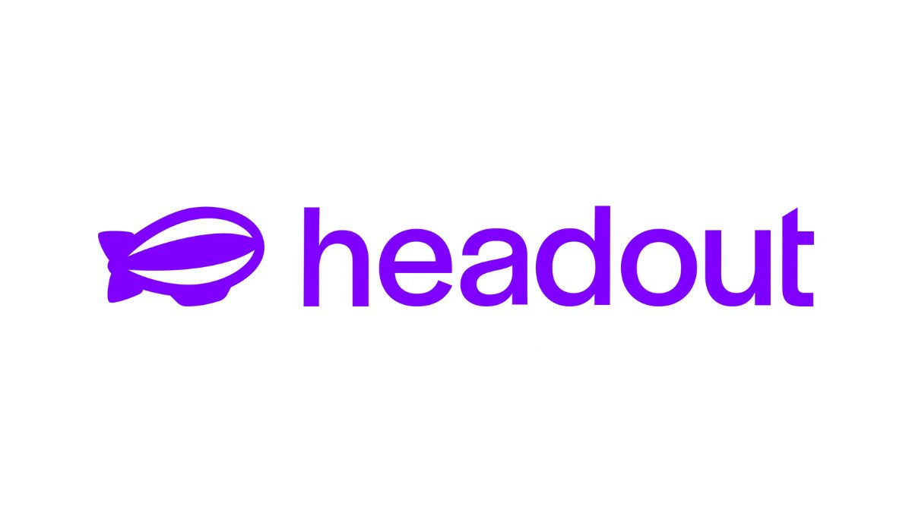
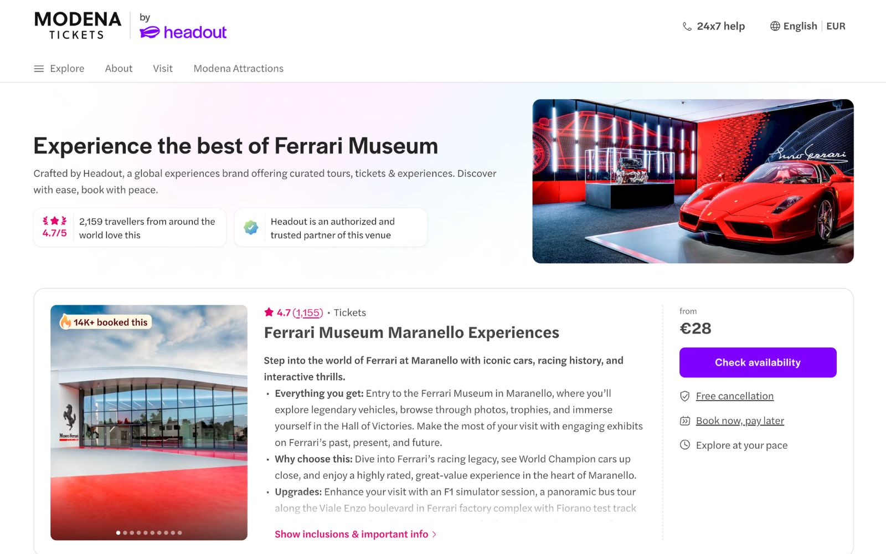
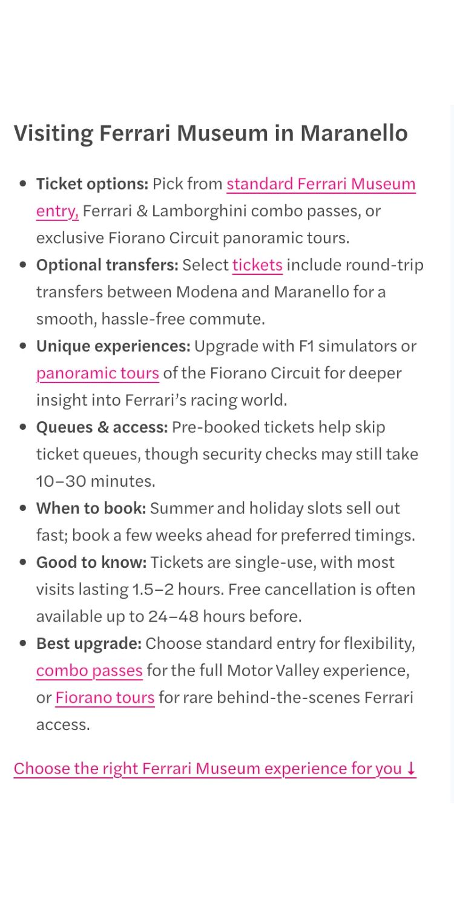
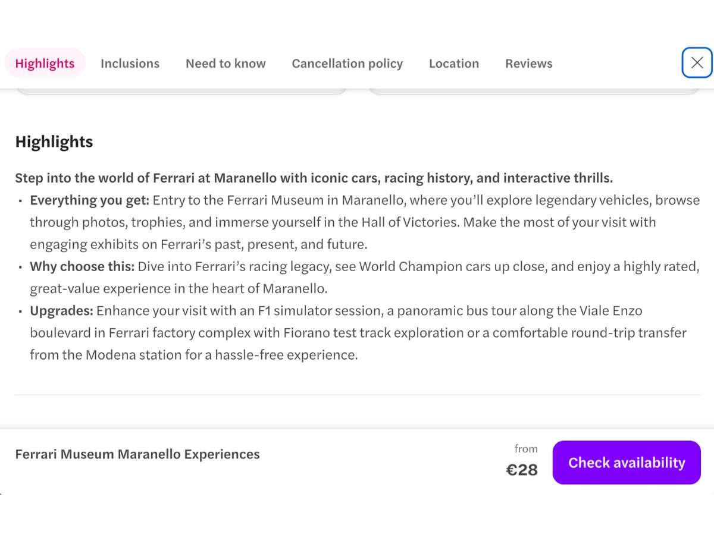
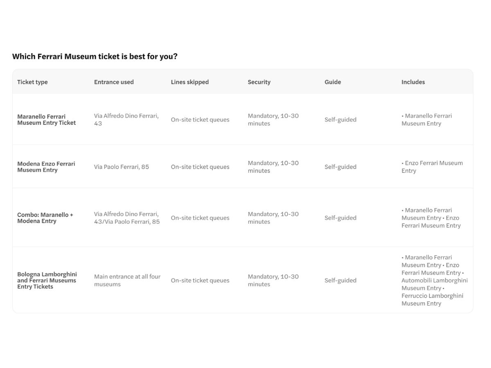
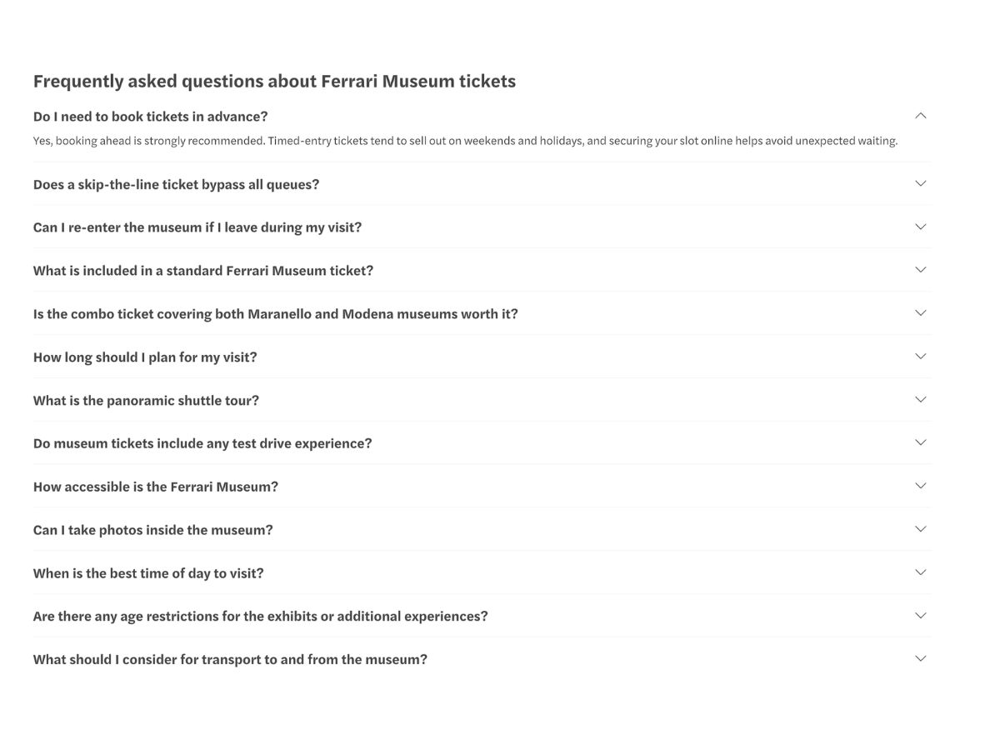

SEO and conversion copy · 2 min read
All roads lead to Maranello & Modena
Headout Museo Ferrari
14%uplift in search-to-booking conversion

- Role
- Content Writer
- Brief
- High traffic, too few bookings
- Inputs
- Search data, reviews, competitors, performance data
- Tools
- Semrush, Google Ads Keyword Planner, Looker
- Result
- +14% search-to-booking conversion
The brief
The Museo Ferrari listing was drawing plenty of search traffic, but only a few of those visitors went on to book. Looking closely, the page had four problems.
- Missing or unclear information Visitors couldn't easily find what they needed to decide.
- A confusing structure Key details were buried or out of order.
- Weak reasons to book The value of the experience didn't come through.
- FAQs that missed the point They didn't answer the questions travellers actually asked.
What I did
- Started with research. Analyzed search data in Semrush and Google Ads Keyword Planner, customer reviews and questions, competitor listings, and the page's performance data in Looker to find where visitors were dropping off.
- Optimized the content structure. Moved the key booking details to the top, where travellers expect them.
- Rewrote the value messaging. Made it clear what the visit includes and why it's worth booking.
- Added a ticket comparison table. Laid out the available ticket options side by side, so visitors could compare them and choose the right one.
- Revised the FAQs. Replaced generic questions with the ones customers actually asked in reviews and enquiries.
- Matched search intent. Aligned headings and copy with how people search for the museum, so the page stayed easy to find.
The work





Click any image to view it full size.
The result
- 14%14% lift in search-to-booking conversion after the rework. Measured against the period before the update.
What I learned: Before this project, I'd have started with the copy. The research changed that: the reviews, customer questions, and Looker data showed exactly where and why visitors were hesitating, and each fix came from that evidence rather than guesswork. It taught me that the best conversion copy is usually found in what customers are already saying.